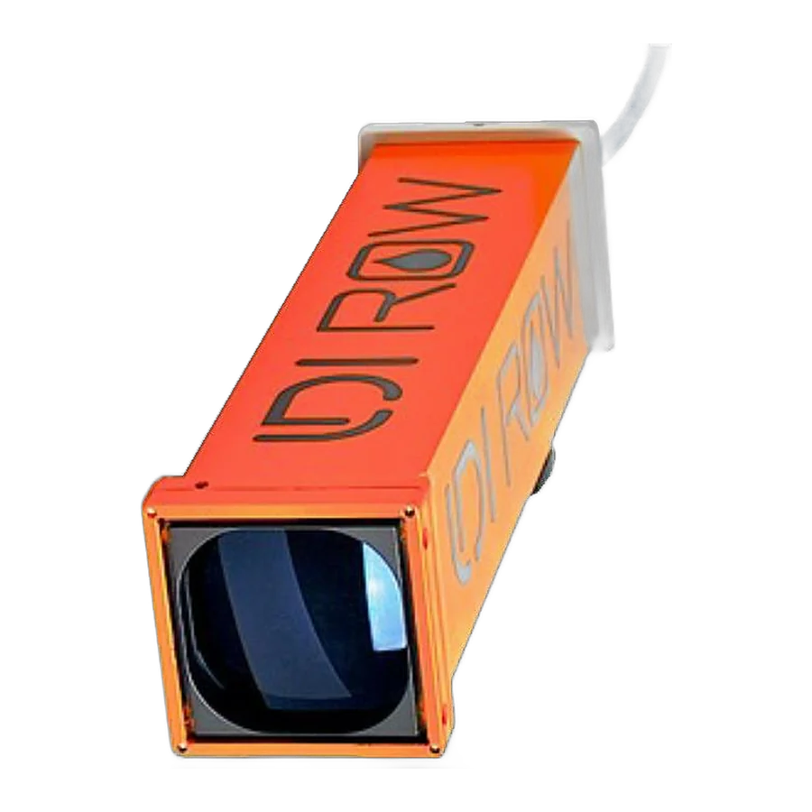
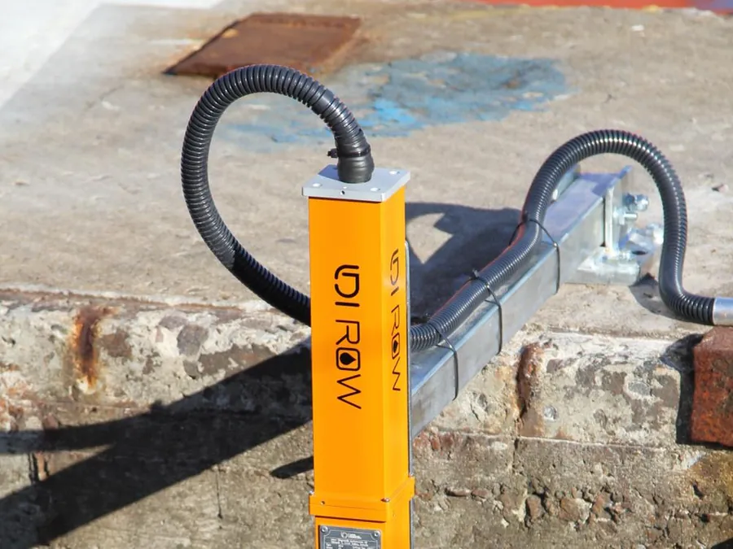

Hydrocarbures · Hydrocarbures
LDI ROWDétecteur optique d’hydrocarbures sans contact
La surveillance permanente des hydrocarbures à la surface de l’eau, sans contact. Placé jusqu’à 10 m au-dessus de l’eau, il détecte un film d’huile de 1 µm et alerte la supervision, de jour comme de nuit, été comme hiver.
- Sensibilité
- Film dès 1 µm
- Portée
- 0,3 à 10 m au-dessus de l’eau
- Sorties
- Contact · 4-20 mA · RS485
- Consommation
- < 2 W
Idéal pour
- Bassins d’eaux pluviales
- Entrées de station
- Points de captage
- Sites industriels
- Zones portuaires
LeasingDisponible à l’achat ou en leasing, par mensualités. Comment ça marche
Points forts
Détecter tôt pour agir avant que la pollution ne s’étende.
- Sans contactRien dans l’eau : ni encrassement ni dérive du capteur.
- Film dès 1 µmDétection à jusqu’à 10 m au-dessus du plan d’eau.
- Surveillance permanenteDe jour comme de nuit, été comme hiver.
- Sans maintenanceBoîtier IP68 pressurisé à l’azote, source LED d’une durée de vie de 5 ans au minimum.
- Raccordement simpleAlimentation 12 V et contact relais ; 4-20 mA et RS485 en plus.
- Solution autonomeSous tampon, relié à un enregistreur sur batterie avec alarme par GSM.
Principe de mesure
Le capteur émet une lumière UV pulsée vers la surface de l’eau, sur une zone pouvant atteindre 1 m². Les hydrocarbures ont la propriété de fluorescer sous cette lumière.
Le capteur analyse la lumière renvoyée : la fluorescence révèle la présence d’hydrocarbure, même en film très fin, et déclenche l’alarme vers la supervision.
- Marnage jusqu’à 2 m ; au-delà, avec un capteur de niveau
- Potence articulée pour montage mural ou en voûte
- Options radio, Wi-Fi ou GSM
Applications
Pour la surveillance des pollutions accidentelles à la surface de l’eau.
- Bassins d’eaux pluvialesFermeture de vanne à la détection pour traiter la pollution avant rejet.
- Entrées de station et usines d’eauProtection du traitement biologique et des points de captage.
- Réseaux d’assainissementSurveillance en amont d’un site sensible, sous tampon.
- Cours d’eau, ports et industriesAlarme immédiate pour circonscrire la pollution.
Caractéristiques
Capteur fixe pressurisé ; potence et options de communication.
| Sensibilité | Film d’hydrocarbure > 1 µm |
|---|---|
| Portée | 0,3 à 10 m au-dessus du niveau d’eau le plus bas |
| Marnage | 2 m au maximum, au-delà avec capteur de niveau |
| Source | LED UV pulsée, durée de vie de 5 ans au minimum |
| Boîtier | Aluminium anodisé, IP68, scellé et pressurisé à 1,5 bar d’azote |
|---|---|
| Sorties | 1 contact relais, 1 port RS485, 1 sortie 4-20 mA |
| Options | RS232, Ethernet, radio, Wi-Fi, GSM |
| Alimentation | 12 V, moins de 2 W |
| Température | − 25 à 60 °C |
Téléchargements
Questions fréquentes
Les questions que nous posent le plus souvent les exploitants et les bureaux d’études.
Quelle épaisseur de film le LDI ROW détecte-t-il ?
Un film d’huile à partir de 1 µm, jusqu’à 10 m au-dessus du plan d’eau.
Que se passe-t-il si le niveau d’eau varie ?
Le marnage est admis jusqu’à 2 m. Au-delà, on lui associe un capteur de niveau.
Faut-il l’entretenir ?
Il est conçu sans maintenance : boîtier IP68 pressurisé à l’azote, source LED d’une durée de vie de 5 ans au minimum.
Peut-il fonctionner sans alimentation secteur ?
Oui : sous tampon, relié à un enregistreur sur batterie 12 V qui mesure de façon cyclique et transmet l’alarme par GSM.